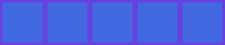
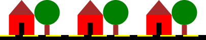

Abstraction
We've learned a lot about names in the previous section. If we want to use fancy programmer words, we could say that names abstract over expressions. This usefully captures the essence of what defining names does, so let's decode the programmer-talk.
To abstract means to remove unnecessary details. For example, numbers are an abstraction. The number "one" is never found in nature as a pure concept. It's always one object, such as one apple, or one copy of this book. When doing arithmetic the concept of numbers allows us to abstract away the unnecessary detail of the exact objects we're counting and manipulate the numbers on their own.
Similarly, a name stands in for an expression. An expression tells us how to construct a value. If that value has a name then we don't need to know anything about how the value is constructed. The expression can have arbitrary complexity, but we don't have to care about this complexity if we just use the name. This is what it means when we say that names abstract over expressions. Whenever we have an expression we can substitute a name that refers to the same value.
Abstraction makes code easier to read and write. Let's take as an example creating a sequence of boxes like the below.

We can write out a single expression that creates the picture.
Image.rectangle(40, 40)
.strokeWidth(5.0)
.strokeColor(Color.royalBlue.spin(30.degrees))
.fillColor(Color.royalBlue)
.beside(
Image.rectangle(40, 40)
.strokeWidth(5.0)
.strokeColor(Color.royalBlue.spin(30.degrees))
.fillColor(Color.royalBlue)
).beside(
Image.rectangle(40, 40)
.strokeWidth(5.0)
.strokeColor(Color.royalBlue.spin(30.degrees))
.fillColor(Color.royalBlue)
).beside(
Image.rectangle(40, 40)
.strokeWidth(5.0)
.strokeColor(Color.royalBlue.spin(30.degrees))
.fillColor(Color.royalBlue)
).beside(
Image.rectangle(40, 40)
.strokeWidth(5.0)
.strokeColor(Color.royalBlue.spin(30.degrees))
.fillColor(Color.royalBlue)
)In this code it is difficult to see the simple pattern within. Can you really tell at a glance that all the rectangles are exactly the same? If we make the abstraction of naming the basic box the code becomes much easier to read.
val box =
Image.rectangle(40, 40)
.strokeWidth(5.0)
.strokeColor(Color.royalBlue.spin(30.degrees))
.fillColor(Color.royalBlue)
box.beside(box).beside(box).beside(box).beside(box)Now we can easily see how the box is made, and easily see that the final picture is that box repeated five times.
Exercise: Archery Again
Let's return to the archery target we created in an earlier chapter, shown below.
: caption")
Last time we created the image we didn't know how to name values, so we can to write one large expression. This time around, give the components of the image names so that it is easier for someone else to understand how the image is constructed. You'll have to use your own taste to decide what parts should be named and what parts don't warrant names of their own.
I decided to name the target, stand, and ground, as shown below. This makes is clear how the final image is constructed. Naming more components seemed to me that it would not aid comprehension.
val coloredTarget =
(
Image.circle(10).fillColor(Color.red) on
Image.circle(20).fillColor(Color.white) on
Image.circle(30).fillColor(Color.red)
)
val stand =
Image.rectangle(6, 20).above(Image.rectangle(20, 6).fillColor(Color.brown))
val ground =
Image.rectangle(80, 25).strokeWidth(0).fillColor(Color.green)
val image = coloredTarget.above(stand).above(ground)Exercise: Streets Ahead
For a more compelling use of names, create a street scene like that shown in the image below. By naming the individual components of the image you should be able to avoid a great deal of repetition.

Here's my solution. As you can see, by breaking the scene down into smaller components we were able to write relatively little code.
val roof = Image.triangle(50, 30).fillColor(Color.brown)
val frontDoor =
Image
.rectangle(50, 15)
.fillColor(Color.red)
.above(
Image
.rectangle(10, 25)
.fillColor(Color.black)
.on(Image.rectangle(50, 25).fillColor(Color.red))
)
val house = roof.above(frontDoor)
val tree =
Image
.circle(25)
.fillColor(Color.green)
.above(Image.rectangle(10, 20).fillColor(Color.brown))
val streetSegment =
Image
.rectangle(30, 3)
.fillColor(Color.yellow)
.beside(Image.rectangle(15, 3).fillColor(Color.black))
.above(Image.rectangle(45, 7).fillColor(Color.black))
val street = streetSegment.beside(streetSegment).beside(streetSegment)
val houseAndGarden =
house.beside(tree).above(street)
val image =
houseAndGarden.beside(houseAndGarden).beside(houseAndGarden).noStroke